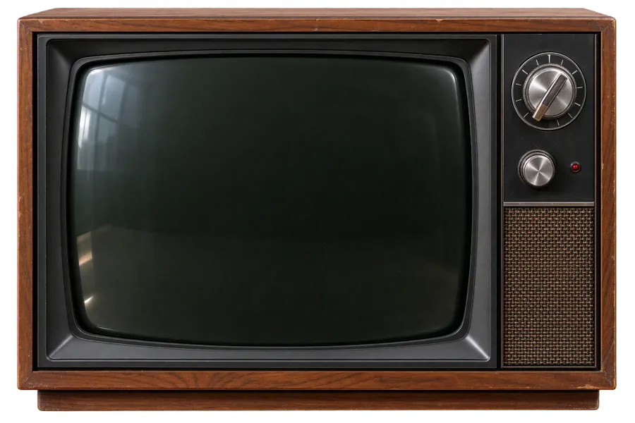
Patrick
Padgett
Music, work & words
Producer · engineer · nerd · est. 1979
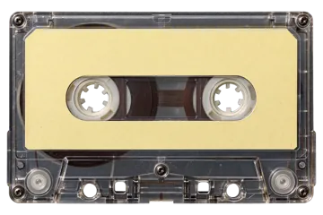
BEDROOM 1988synthwave · 2:00 loop · side A
STOPPED · press PLAY for the soundtrack
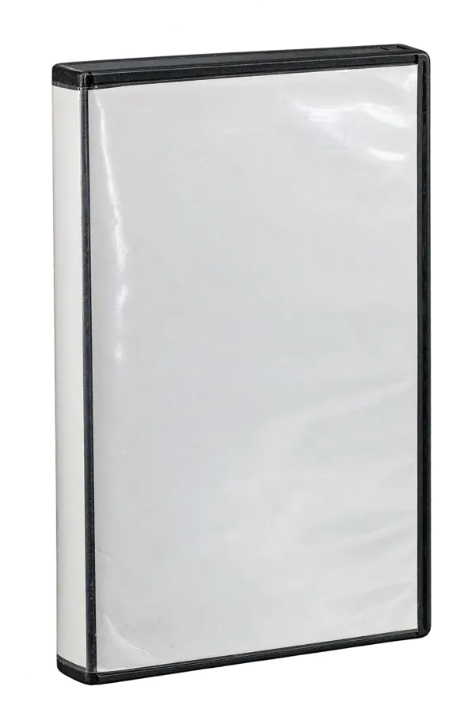
PADGETT HOME VIDEO PRESENTS
Be kind,
rewind.
The producer who tunes billing platforms by day and bass amps by night.
I make systems that turn raw switch data into bills that are right. For fourteen years I was the top-tier expert on Sprint's billing mediation platforms, working the data off Nortel, Ericsson and Lucent gear. Later I ran infrastructure automation at Jabil and Raymond James: Kubernetes, Jenkins and a lot of Linux.
In 2000 I wrote corkscrew, a small C tool that tunnels SSH through HTTP proxies. It got a review in Linux Magazine, a mention in 2600: The Hacker's Quarterly (Vol. 19, Issue 2, Summer 2002) and its own Wikipedia article; it still ships in most distributions.
I play bass and produce records. The newest is Korupsi by Ledakan Pemuda, recorded in Jakarta in 2019 and finished in the US in 2025. I live in the Tampa Bay area.
FBI WARNING: unauthorized reproduction of this bio is punishable by a very stern look.
Music
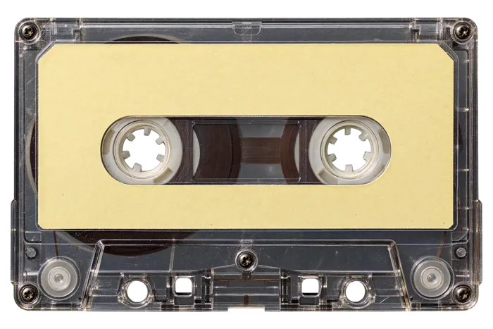
KORUPSI Ledakan PemudaJKT 2019 → USA 2025 · 11 tracks
Eleven tracks of Indonesian protest music pushed through modern dubstep bass. I produced, mixed and played on it; the 30-second previews and the full record live on the music site.
▶ Play the recordLedakan Pemuda ↗
Bass player first. Producer because somebody had to be.
The coffee table
Every cover I was ever on, if you believe the coffee table. Pick one up.
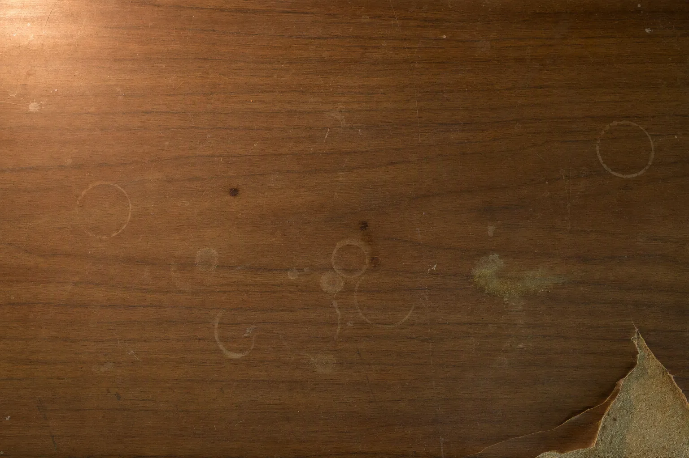
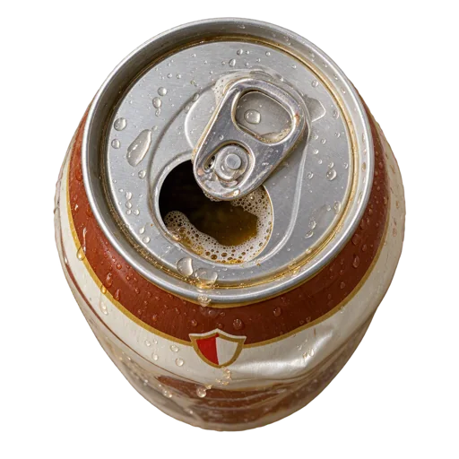
Tap a cover to pick it up · tap again to put it down
Madballs
Nine gross-out rubber balls, one per obsession. Everything that was under the bed in 1988 and, honestly, still is.
-
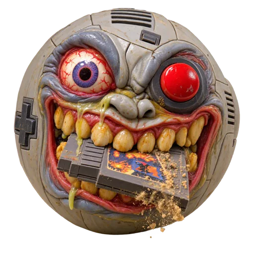
Blow-Hard BartNintendo
NES → SNES. Blowing in the cartridge worked. Don't argue.
-
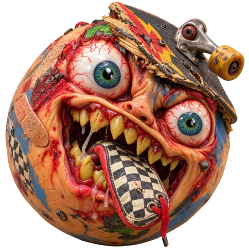
Road-Rash RudyThrasher
Skate mag, skate rock, Vision Street Wear high-tops.
-
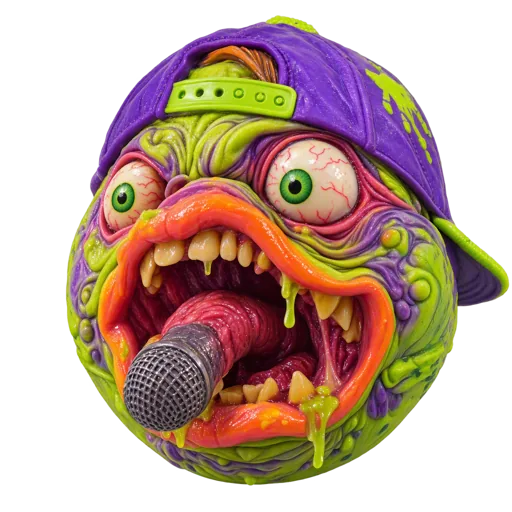
Epic EddieFaith No More
The Real Thing. Mike Patton doing whatever that was.
-
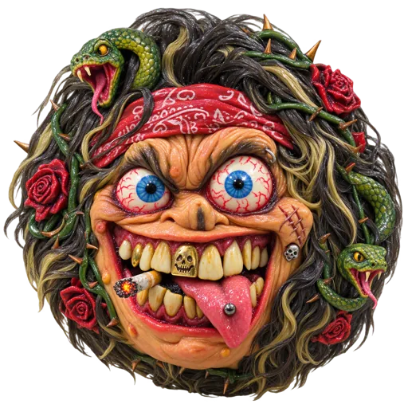
Jungle JimmyGuns N' Roses
Appetite. RIP Magazine on the floor next to it.
-
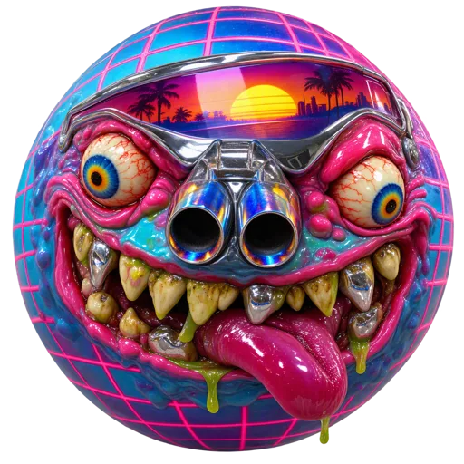
Neon NateSynthwave
Countach, Testarossa, neon grid to the horizon.
-
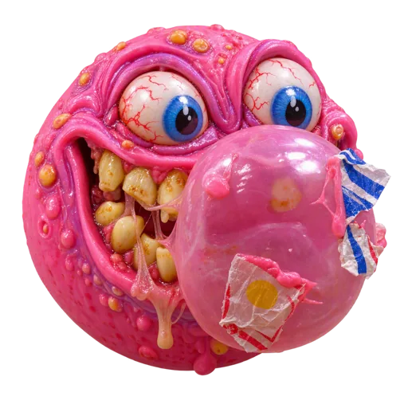
Wax-Pack WallyGarbage Pail Kids
In the shoebox under the bed, sorted by grossness.
-
Slime-Time SamNickelodeon
You Can't Do That on Television. "I don't know" — slime.
-
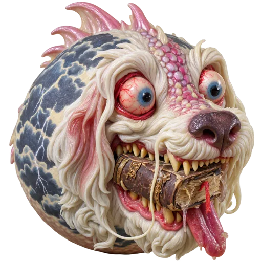
Falkor FredNeverending Story
Falkor. The Nothing. We don't talk about the horse.
-
Inconceivable IkePrincess Bride
As you wish. Have fun storming the castle.
Work
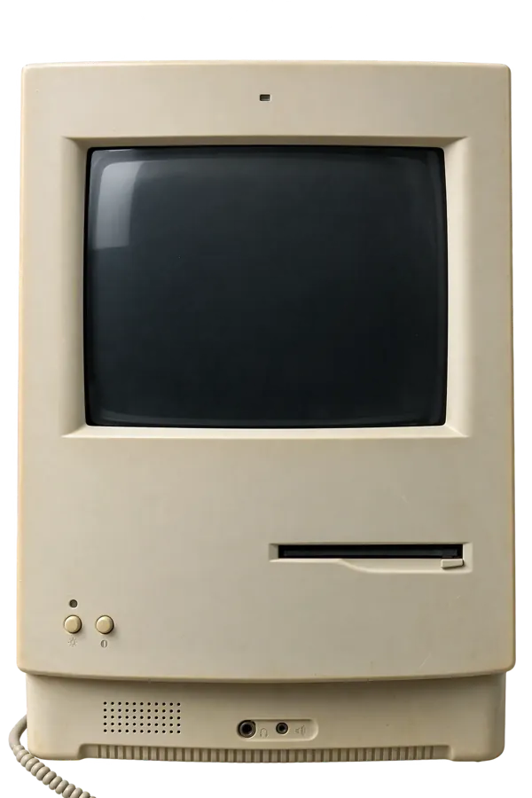
CONNECT 2400 SunOS UNIX (databank) login: patpadgett Password: Last login: Sep 4 1992 ttyd1 databank% finger pat Name: Pat Padgett Shell: /bin/csh Plan: Music. Work. Words. databank% ▌
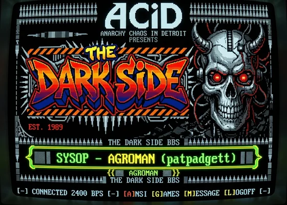
unit WhoIsOn; {Hermes II external} interface uses HermesTypes, ANSI; procedure Main (var u: UserRec); implementation procedure Main (var u: UserRec); begin ClearScreen; SetColor(cyan); WriteLn('Callers online: ', NumOnline); if u.baud < 2400 then WriteLn('...patience.'); end; end.▌
It started with a Mac, a modem and a phone line the rest of the house wanted back.
- 1992Hermes II BBS — SysOp. One line, ANSI menus, message bases, and the first users I ever had.
- 1993THINK Pascal — externals for the board: my first real programs.
- 1994Perl and Linux — and production Linux ever since.
- 1995Advertisnet — System Administrator at a rural ISP selling dial-up to Lake of the Ozarks residents, and supporting its Macintosh clients.
- 2000corkscrew — SSH over HTTP proxies, in C. Linux Magazine, 2600 (Vol. 19 No. 2), Wikipedia, still in the distros.
- 2001–2015Sprint — Tier-3 SME, wireless & wireline billing mediation. Nortel, Ericsson, Lucent AMA/CDR. $2M saved, +250% throughput, −50% alarm time-to-resolution.
- 2015–2019Jabil · Raymond James — infrastructure automation: Kubernetes, Jenkins, Ansible, Terraform, ELK.
- nowLooking. Tampa Bay FL · remote, hybrid or contract. Full résumé on channel 4 →